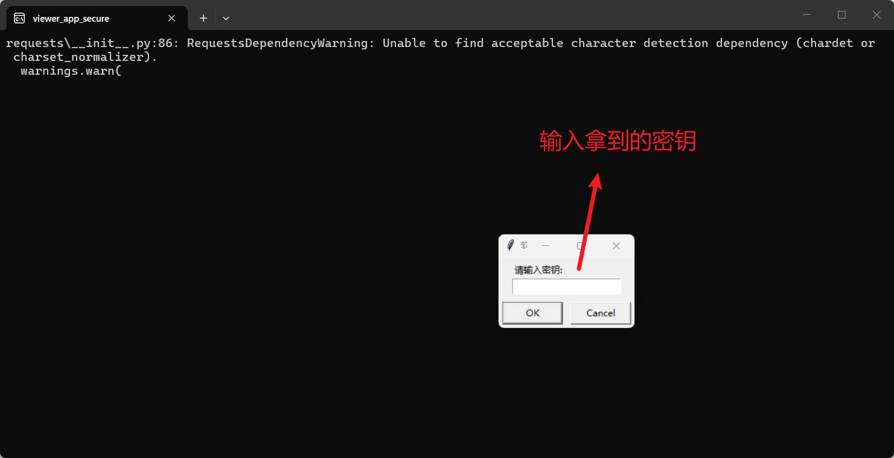
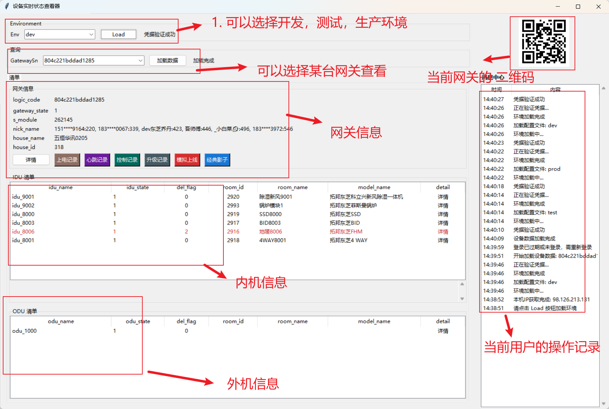
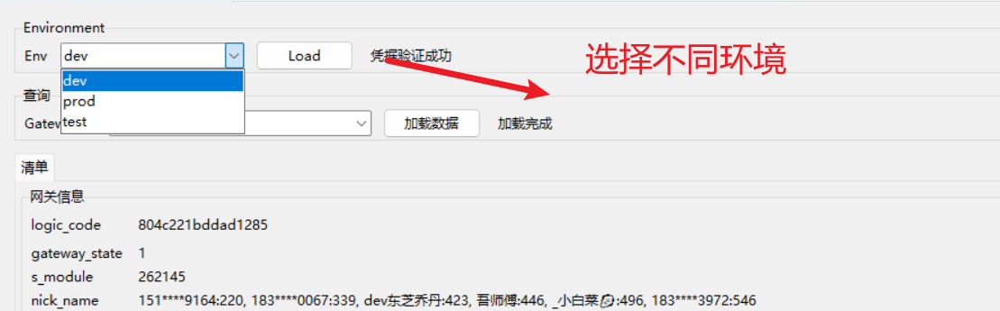
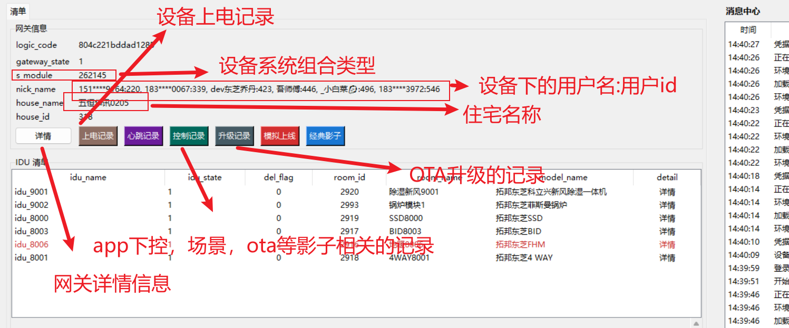
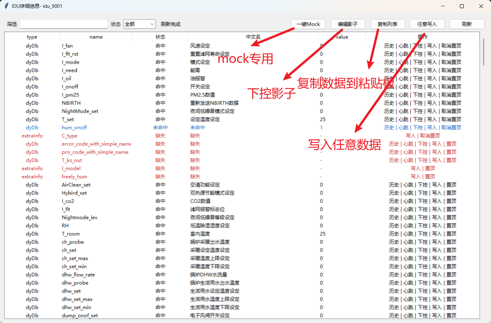
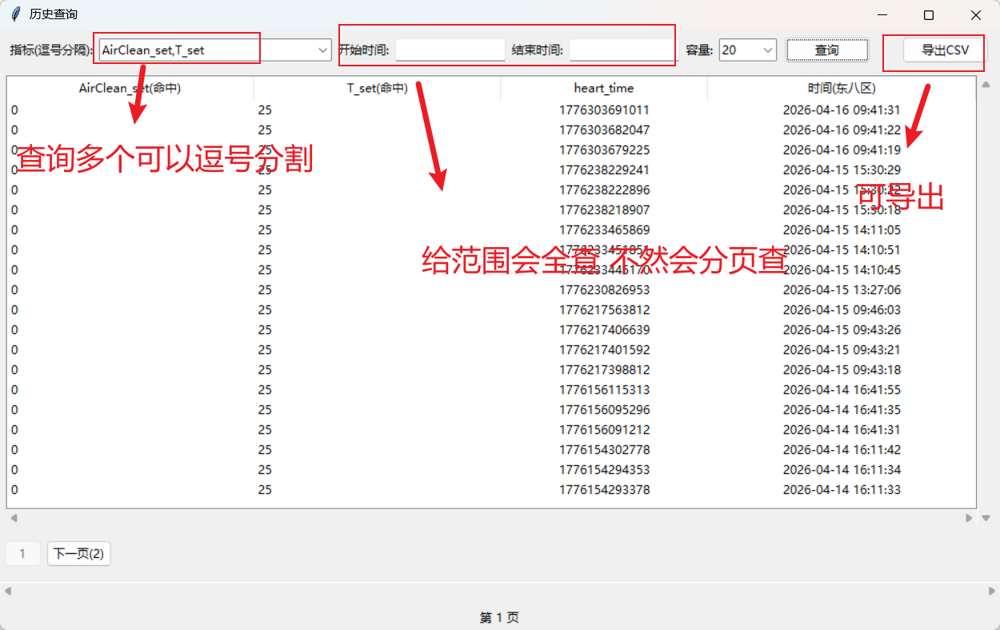
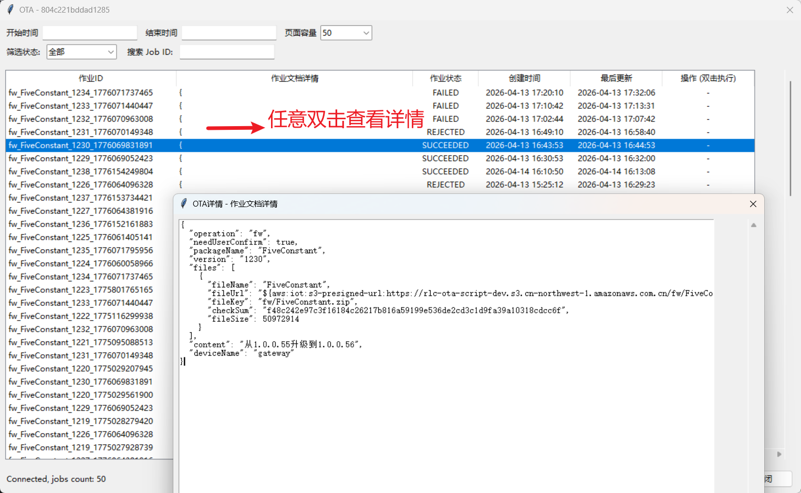
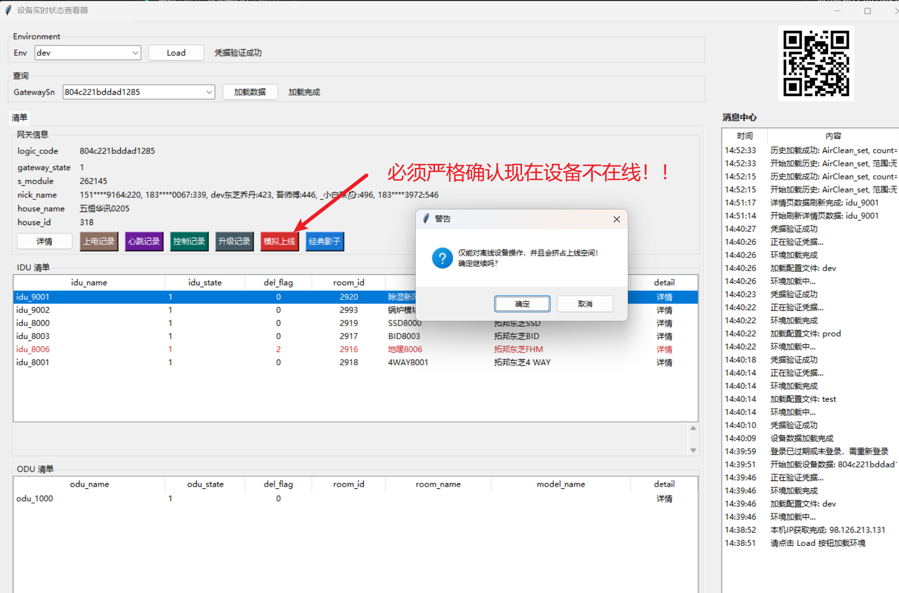

设备实时状态查看器操作手册
文档版本：v1.2（2026-05-06）
修改记录
- 2026-05-06：列表页新增第二行按钮
一键添加安全组增加多个测试ip出口，同时支持自己填入安全组 - 2026-04-29：列表页新增第二行按钮
一键添加安全组，自动采集公网 IPv4 并维护安全组规则。 - 2026-04-29：优化历史查询行为，时间输入非法时不回落默认分页；查询前清空旧数据，查无数据时明确提示“暂无数据”。
- 2026-04-29：心跳/写入/下控统一值类型处理，优先尝试 number，失败再按 string；下控/心跳成功后自动关闭确认弹窗。
- 2026-04-28：新增 API 服务能力，支持 REST 影子控制/查询与 AWS MQTT over WebSocket 透明中转。
- 2026-04-28：补充 API 服务使用方案、内部 REST 示例（curl）与 AWS 官方文档链接说明。
- 2026-04-27：新增 API 消息窗口聚合日志，按每 10 条中转/操作消息输出一条摘要。
- 2026-04-26：调整列表页排序，IDU/ODU 按“在线未删除 → 离线未删除 → 已删除”分组并按名称排序。
目录
快速开始索引
- 导出设备过去一个月心跳/上电记录：点击 Load 加载环境，输入网关 SN，点击“加载数据”，再点“心跳记录”或“上电记录”，输入时间范围后点击“查询”，等待完成后点击“导出”。（参考：第三节、第四节、第六节）
- 查看网关当前软件版本：加载数据后，点击网关信息下“详情”，在筛选框输入
version即可定位。（参考：第四节、第五节） - 导出某个指标过去一周历史上报记录：加载网关数据后，点击某个内机/外机“详情”，再点“历史”查看并导出。（参考：第五节、第六节）
- 查询此网关全部云端下控记录（当前适配 dev/test）：点击“控制记录”，输入时间范围后查询；或清空时间范围做分页查询全部。（参考：第四节、第六节）
- 查询 OTA 记录：点击“升级记录”，输入时间范围查询；或清空时间范围查询全部。（参考：第七节）
- 启动调试服务器：点击“API 服务”按钮，可以开启本地调试服务器，提供 RESTful 方式下控设备的接口。（参考：第四节）
第一节：完整启用流程（必须按顺序）

必须按以下顺序完成：授权码输入 → 点击 Load 加载环境 → 输入运维账号密码（含验证码）登录 → 输入网关 SN → 点击“加载数据”，否则软件无法完整使用。
- 启动软件后，先弹出软件激活输入框，输入授权密钥（按月有效）。
- 激活成功后进入主界面，在 Environment 区域选择环境并点击
Load。 - 若凭据未就绪/过期，系统弹出登录框：输入运维账号、密码、验证码，点击
登录。 - 回到主界面，在查询区域输入
GatewaySn。 - 点击
加载数据，成功后可使用详情、记录、升级、模拟上线、影子编辑等全部功能。
取消激活或取消登录会导致后续能力受限；未输入 GatewaySn 时，大部分操作按钮会提示先输入 SN。
第二节：启动与授权

| 交互项 | 位置 | 说明 |
|---|---|---|
| 授权码输入框 | 程序启动后自动弹出 | 输入密钥并校验是否为本月可用；校验成功后保存本机凭证，失败会提示错误。 |
| 取消输入 | 授权输入框 | 关闭程序，不进入主界面。 |
第三节：环境加载与登录

| 按钮/交互 | 前置条件 | 行为逻辑 |
|---|---|---|
Load |
已选择 Environment | 加载配置、恢复本地历史网关、触发凭据验证；失败时在环境状态区显示错误。 |
登录弹窗 登录 |
Load 后检测到凭据失效或未登录 | 提交账号/密码/验证码，成功后获取 Token 与 STS 凭证并缓存。 |
登录弹窗 退出 |
无 | 关闭登录弹窗，本次登录取消。 |
| 验证码图片点击 | 登录弹窗已打开 | 刷新验证码图片（失败时可重试）。 |
第四节：主页面（清单页）按钮与逻辑

| 按钮 | 作用 | 关键交互逻辑 |
|---|---|---|
加载数据 |
加载网关总览、IDU/ODU 列表、二维码 | 需要 GatewaySn；成功后更新网关信息、列表颜色标记、状态栏与消息中心。 |
详情 |
打开网关详情窗口 | 未填 SN 不执行。 |
上电记录 |
打开上电记录弹窗--设备上电，上报结构数-内外机数据 | 打开这个页面就会启动被动监听，如果设备有上电，会实时响应，速度优于云端。也可以主动查询，最好输入时间范围。 双击任何值可以打开格式化的窗口，方便复制，也可以导出结果为xlsx |
心跳记录 |
打开心跳记录弹窗--设备心跳，上报实时数据-运行数据 | 打开这个页面就会启动被动监听，如果设备有心跳，会实时响应，速度优于云端。也可以主动查询，最好输入时间范围。 双击任何值可以打开格式化的窗口，方便复制，也可以导出结果为xlsx< |
控制记录 |
打开影子控制监听弹窗，APP，WEB-场景，设备操控记录 | 监听经典影子与命名影子 update/accepted，支持主动查询，但主动查询只能查到场景APP下控的命令 |
升级记录 |
查看设备的升级记录-升级的状态-也可以拒绝设备的升级请求，拒绝优先级高于web的ota取消，特殊情况下需要设备重启 | 支持查询作业、执行接受/拒绝/模拟升级/开始升级、导出。 |
模拟上线 |
模拟设备占用上线连接 | 对于离线的设备，如果希望能让APP，web展示在线状态，可以占位上线，但会让真是设备无法上线，需确保调试状态 |
经典影子 |
打开经典影子编辑器---主要是OTA升级的网关设备上报，和app同意模拟 | 支持刷新影子、编辑 JSON、差异下发。 |
API 服务 |
开启本地调试服务器，提供 RESTful 接口 | 点击后启动调试服务器，允许通过 RESTful API 的方式对下级设备进行控制和交互。 |
一键添加安全组 |
将当前客户端公网 IPv4 自动加入 DB 安全组 | 位于第二排按钮；自动从多个公网 IP 服务采集 IPv4，仅写入 IPv4/32 规则，备注为 client-auto-登录用户名，同一用户会先清理旧规则再更新。 |
列表中的 IDU/ODU 行最后一列“详情”为可点击单元格，点击后进入对应对象详情页。
第五节：详情页（网关/IDU/ODU）按钮与操作列

| 按钮/交互 | 作用 | 逻辑说明 |
|---|---|---|
刷新 | 刷新当前对象全部数据 | 异步加载并高亮“刚更新”项。 |
任意写入 | 自定义 key/value 写入 | 可选写入目标：dyDb（心跳数据） 或 extraInfo（上电数据）。 |
复制列表 | 复制当前表格所有可见行 | 复制到系统剪贴板。 |
编辑影子 | 打开该对象影子编辑器 | 支持刷新、编辑 JSON、差异下发。 |
一键Mock | 批量覆盖心跳 类型数据 | 一般只用于mock设备，执行前二次确认。 |
| 双击任意单元格 | 查看单元格详情 | 弹出详情窗口并尝试 JSON 格式化展示。 |
操作列（按文本点击）
历史（仅心跳数据）：打开历史查询窗口，可查询、分页、导出 CSV。心跳（仅心跳数据）：发送指定指标心跳值，此操作会完全模拟设备上报，所以会触发云端所有相关操作。下控（仅心跳数据）：下发控制到影子 desired，完全模拟APP下发写入：写入指标值。这是直接写入数据库，不会引起云端操作，但是对于上电数据，会修改物模表现置顶 / 取消置顶：切换该指标在列表中的置顶状态。
第六节：历史/记录类弹窗

| 弹窗 | 按钮 | 交互逻辑 |
|---|---|---|
| 历史查询 | 查询 / 导出CSV |
支持多指标、时间范围、分页容量；有时间范围时走全量模式。 |
| 上电记录 / 心跳记录 | 查询 / 导出XLSX / 关闭 |
支持主动查询与 MQTT 被动监听融合；分页按钮含首页/上一页/下一页/末页。 |
| 控制监听 | 查询 / 导出XLSX / 关闭 |
监听经典影子与命名影子消息；双击单元格可查看详情。 |
第七节：OTA 升级弹窗

图片占位：请将
./images/section7.png 替换为第七节截图。| 按钮/动作 | 触发方式 | 逻辑 |
|---|---|---|
查询 | 点击底部按钮 | 刷新作业列表，按时间/状态/关键字过滤并展示操作列。 |
导出XLSX | 点击底部按钮 | 导出当前作业数据。 |
关闭 | 点击底部按钮/右上角关闭 | 断开 MQTT 后关闭窗口。 |
| 操作列双击 | 双击“操作”列 | 队列中作业可“接受/拒绝”；进行中作业可“模拟用户升级”或“开始升级”。 |
进度弹窗 结束 | 开始升级后弹出 | 上报最终进度；进度到 100% 时尝试回写 SUCCEEDED。 |
第八节：影子与模拟上线弹窗

图片占位：请将
./images/section8.png 替换为第八节截图。| 弹窗 | 按钮 | 逻辑 |
|---|---|---|
| 经典影子编辑 | 刷新 / 下发 / 关闭 |
下发时按 desired 差异计算，避免无效提交。 |
| 详情页影子编辑 | 刷新 / 下发 / 关闭 |
逻辑同上，作用对象为当前 system/idu/odu。 |
| 模拟上线 | 启动前确认框 + 关闭 |
确认后连接 MQTT 并占用设备 Client ID，关闭时释放连接。 |
第九节：通用提示与异常处理

- 未输入 GatewaySn 时，涉及网关数据的按钮会提示“请输入 GatewaySn”。
- 鉴权失效会触发重新登录，重新登录成功后再重试当前操作。
- 导出功能（CSV/XLSX）在无数据时会提示“暂无可导出数据”。
- 关闭记录/监听类弹窗时，会自动断开 MQTT 连接，避免后台资源占用。
- 主界面消息中心会持续记录关键操作日志，便于运维排障。
第十节：API服务与自动化测试（REST + WebSocket + MQTT转接）

图片占位：请将
./images/section10.png 替换为API服务弹窗截图。
该功能必须在本软件内先完成 Load + 登录 后使用。API不独立登录，完全复用软件当前授权与STS。
| 入口 | 位置 | 说明 |
|---|---|---|
api服务 |
列表页网关信息按钮行最后一个按钮 | 点击后弹出API服务窗口，并可启动本地 REST + WebSocket 服务。 |
REST 接口
GET /health：查看服务状态、当前环境、WS隧道连接数。POST /v1/shadow/control：下控影子（逻辑与详情页“下控”一致）。POST /v1/shadow/get：读取经典影子/命名影子。
WebSocket 服务（透明中转）
- 地址：
ws://127.0.0.1:18081（端口可在弹窗中改）。 - 连接路径：
/mqtt，即ws://127.0.0.1:18081/mqtt。 - 协议与 AWS IoT MQTT over WebSocket 一致：传输原生 MQTT 帧（CONNECT/SUBSCRIBE/PUBLISH 等）。
- 本软件仅负责使用当前登录态 STS 做 SigV4 签名并转发，不定义私有 action/event 协议。
转接说明
- 客户端订阅哪些 topic，就会收到哪些消息（如心跳、上电、经典影子、命名影子变更）。
- 客户端发布哪些 topic，就会被原样转发到 AWS MQTT（例如影子操作相关 topic）。
- 该中转不改写业务 payload，不插入额外事件结构。
典型流程
- 在软件中完成
Load + 登录并确认 GatewaySn 可用。 - 点击
api服务，确认 REST 与 WS 地址。 - MQTT 客户端改连
ws://127.0.0.1:18081/mqtt，并按 AWS 文档正常发起 MQTT CONNECT。 - 随后按标准 MQTT 执行 SUBSCRIBE/PUBLISH：可监听心跳、上电、经典影子与命名影子变更；也可执行影子操作。
API服务使用方案
- 方案A（推荐联调）：REST 用于影子控制与查询，WebSocket 用于 MQTT 全链路调试与监听。
- 方案B（纯 MQTT）：仅连接
ws://127.0.0.1:18081/mqtt，按 AWS MQTT 协议完成订阅与发布。 - 方案C（仅控制）：仅调用 REST
/v1/shadow/control与/v1/shadow/get。 - 授权要求：必须保持本软件已登录；STS 过期后先回软件重新登录，再继续 API 调试。
- 接口示例：在软件内
api服务弹窗文档中查看最新 REST 请求示例（含 curl）。